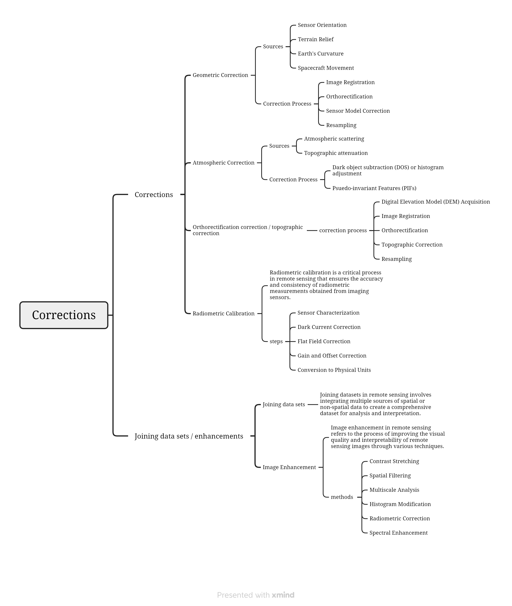
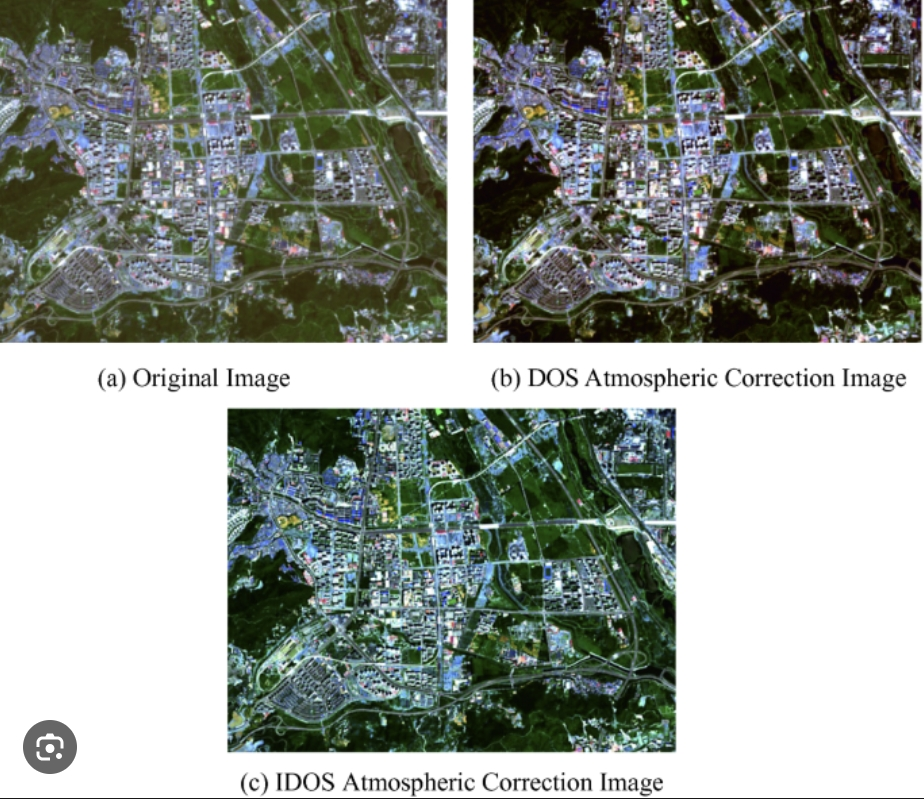
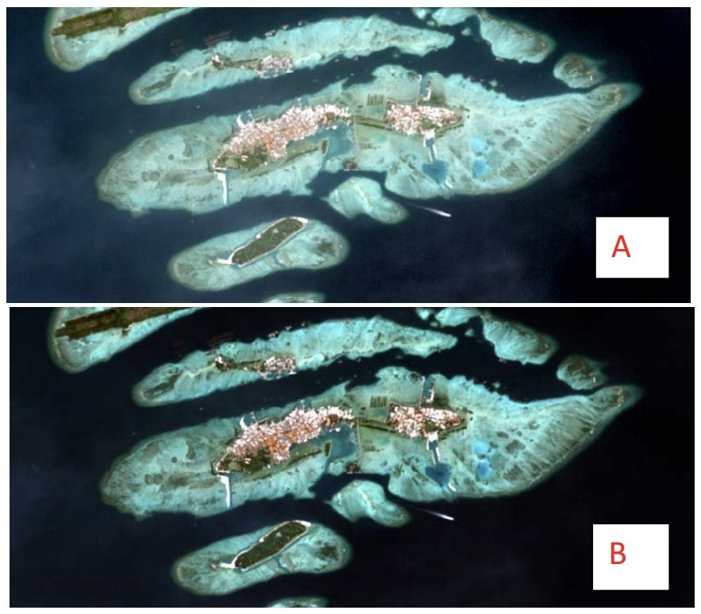

3 week3 - Remote sensing data
3.1 Summary
This week mainly covered corrections, data joining, and enhancement. Atmospheric correction is a crucial step in remote sensing image processing aimed at removing the influence of the atmosphere on the image, thus obtaining more accurate surface reflectance information. The primary goal of atmospheric correction is to eliminate atmospheric scattering and absorption effects to quantify surface features more accurately (Jensen, 2007).
Due to the complexity of the topics discussed this week, I utilized mind mapping to record the key points of the lectures.
3.2 Application
3.2.1 DOS
Yu Wang and An colleagues proposed an improved Dark Object Subtraction (IDOS) method. The new method retrieves the ancillary information on the aerosol optical depth (AOD) and total water vapor (TWV) from the multi-spectral information. (Wang, 2019 )

3.2.2 ocean colour
Siregar, V P and colleagues compared the results of object-based image classification from images that underwent atmospheric correction using the FLAASH method with those that did not. Their findings indicate that atmospheric correction with FLAASH enhances the visualization and reflectance patterns of shallow water objects, which is essential for the accurate classification and mapping of benthic habitats. (Siregar, 2018)

Comparison image before correction (a) and after atmospheric correction (b)
3.3 Reflection
The lectures this week are quite abstract and involve a lot of mathematical formulas when explaining the principles of correction and enhancement. However, they are crucial for later image processing and are key steps in subsequent analysis. If correct image processing is not performed from the beginning, it could lead to ineffective or erroneous analysis in the end.
The mathematical formulas for corrections may appear quite complex, but fortunately, each satellite comes with a user manual. This manual provides the correction formulas that can be referenced and utilized during the correction process. With the deepening of research, correction algorithms are continuously iterated and updated, resulting in improved image quality.
In practical operations, PCA analysis requires a large amount of computation and is very time-consuming. This week’s operations are still conducted in R, but I am also curious about how image processing is done in GEE.
3.4 Reference
Jensen, J. R. (2007) Remote sensing of the environment : an earth resource perspective / John R. Jensen. 2nd ed. Upper Saddle River, N.J: Pearson Prentice Hall.
Siregar, V. P. et al. (2018) The effect of atmospheric correction on object based image classification using SPOT-7 imagery: a case study in the Harapan and Kelapa Islands. IOP Conference Series: Earth and Environmental Science. 176 (1), 12028-.
Wang, Y., Wang, X., He, H., Tian, G. (2019). An Improved Dark Object Subtraction Method for Atmospheric Correction of Remote Sensing Images. In: Wang, Y., Huang, Q., Peng, Y. (eds) Image and Graphics Technologies and Applications. IGTA 2019. Communications in Computer and Information Science, vol 1043. Springer, Singapore.
3.5 Dictionary
- NDMI: The Normalized Difference Moisture Index (NDMI) is a satellite-derived index that is used to assess vegetation moisture content and drought conditions.
- DOS: Dark Object Subtraction.
- DN: Digital Number.
- Ratio: the difference between two spectral bands that have a certain spectral response.
- GLCM: Gray Level Co-occurrence Matrix.